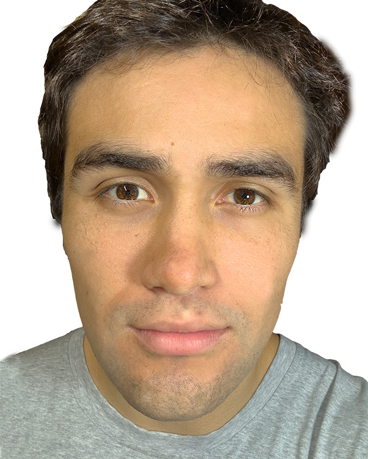
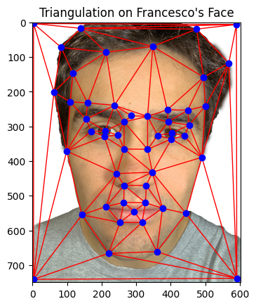

Figure 1: Francesco's Face with Correspondence Points.

Figure 3: Triangulation on Francesco's Face.

Figure 5: Triangulation on the Mean Shape.
In this project, I explored the fascinating world of face morphing. By defining facial correspondences, computing affine transformations, and generating intermediate frames, I created smooth transitions between facial images. Additionally, I computed the mean face of a population and generated caricatures by extrapolating from this mean.
The first step in face morphing is to define pairs of corresponding points on two facial images—my own face and that of George Clooney. I manually selected key facial landmarks such as eyes, nose, mouth, and the outline of the face using an annotation tool. Consistent labeling of these points was crucial for accurate morphing.
Using these correspondences, I computed a Delaunay triangulation on the average shape of the two point sets to ensure the triangles were as regular as possible, reducing distortion during warping.
Figure 1: Francesco's Face with Correspondence Points.
Figure 3: Triangulation on Francesco's Face.
Figure 5: Triangulation on the Mean Shape.
Figure 2: George Clooney's Face with Correspondence Points.
Figure 4: Triangulation on George's Face.
Figure 6: George's Face Warped to Mean Shape with Triangulation.
To compute the mid-way face, I averaged the corresponding points of the two faces to get the mean shape. Then, I warped both faces into this average shape using affine transformations for each triangle. Finally, I averaged the colors of the two warped images to obtain the mid-way face.
The process of morphing involves smoothly changing both the shape and colors from one face (Francesco) to another (George Clooney).
First, we select key points on both faces, such as the eyes, nose, and mouth. These points help guide the morphing process by ensuring features align. We then create triangles by connecting these points, which divides both faces into a grid. This triangulation makes sure the transformation happens smoothly across the entire face.
To change the shape of the face, we warp each triangle from my face to match the corresponding triangle on George’s face. This is done using a transformation that adjusts the size, shape, and position of each triangle, making the transition from one face to another smooth and seamless.
Once the shapes are aligned, we blend the colors of both faces. This is done by gradually mixing the pixels from my face with those from George’s. At the start, the image looks more like Francesco, but as the blend progresses, it gradually looks more like George.
To create the full morphing effect, we combine the shape transformation and the color blending. For each frame in the sequence:
Figure 7: The Mid-way Face of Francesco and George Clooney.
With the mid-way face computed, I proceeded to create a morph sequence by generating intermediate frames that gradually transition from my face to George Clooney's face. This was achieved by varying the warp fraction and dissolve fraction from 0 to 1 over 45 frames, resulting in a smooth animation.

Figure 8: Morphing Sequence from Francesco to George Clooney.

Figure 8.1: Morphing Sequence from Francesco to George Clooney Bouncing.
I utilized the FEI Face Database to compute the mean face of a population. First, I calculated the average shape by averaging the corresponding points of all faces in the dataset. Then, I warped each face to this average shape and computed the average of these warped faces.
Here are some examples of individual faces warped to the average shape:

Figure 9a: Original Face (Example 1).
Figure 9b: Individual Face Warped to Average Shape (Example 1).

Figure 10a: Original Face (Example 2).
Figure 10b: Individual Face Warped to Average Shape (Example 2).

Figure 11a: Original Face (Example 3).
Figure 11b: Individual Face Warped to Average Shape (Example 3).

Figure 12a: Original Face (Example 4).
Figure 12b: Individual Face Warped to Average Shape (Example 4).

Figure 13a: Original Face (Example 5).
Figure 13b: Individual Face Warped to Average Shape (Example 5).
The computed average face of the population is shown below:
Additionally, I warped my face into the average geometry and warped the average face into my face's geometry to observe the differences:
Figure 14: The Average Face of the Population.
Figure 15: My Face Warped into Average Geometry.
Figure 16: Average Face Warped into My Face's Geometry.
To create caricatures, I extrapolated my facial features from the population mean by adjusting the shape and appearance beyond the average. By manipulating the warp fraction beyond the range [0,1], I generated exaggerated versions of my face.
Here are the results with varying warp fractions:
Figure 17: Caricature with Warp Fraction -0.75.
Figure 18: Caricature with Warp Fraction -0.5.
Figure 19: Caricature with Warp Fraction -0.25.

Figure 20: Original Face (Warp Fraction 0).
Figure 21: Caricature with Warp Fraction 0.25.
Figure 22: Caricature with Warp Fraction 0.5.
In this part, we explore the effects of morphing between different ethnicities. Using an average face from a Turkish population, we transform Francesco's face to take on the shape and features typical of that population, and vice versa. This allows us to visualize the effects of blending different ethnic characteristics.
The process begins by using an average face from a Turkish dataset. This face represents the typical geometric and color properties of the Turkish population. We use the same triangulation technique to align Francesco's face with the average Turkish face.
Next, we warp Francesco's face to fit the geometry of the average Turkish face. This process involves transforming Francesco's facial structure to resemble the average Turkish proportions, such as the shape of the nose, eyes, and jawline, while retaining his original colors.
To complete the transformation, we generate a midway face that combines both Francesco’s and the Turkish face's shapes and colors equally. This midway face represents a perfect blend of both ethnicities. This midway face blends the key features of both faces, combining Francesco’s distinct features with the Turkish facial characteristics.
Similarly, we warp the average Turkish face to fit Francesco's facial structure. This shows how the Turkish face would look with Francesco’s geometry, providing an interesting comparison of features.
Figure 9: Francesco's Original Face

Figure 10: Average Turkish Face
Figure 13: Midway Face (Francesco + Turkish)
Figure 12: Turkish Face Warped to Francesco's Geometry
Figure 11: Francesco Warped to Turkish Geometry
The transformation process illustrates how facial features from different ethnic groups can blend together through shape and color adjustments. This approach can be applied to morph between any set of faces, highlighting the diversity of human facial structures.
Through this project, I gained a deeper understanding of image morphing techniques, including defining correspondences, computing affine transformations, and generating morph sequences. Creating the mean face of a population and producing caricatures provided fascinating insights into facial geometry and how subtle changes can significantly alter perception.